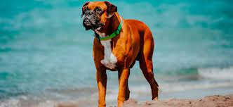

BOXER

Durante el siglo XIX un alemán, Georg Alt,
intentó crear una raza nueva a partir del
Bullenbeisser de Brabante. Al cruzarlo con
un Bulldog Inglés, el antiguo ejemplar,
consiguieron al primer Boxer, Flocki.
Se han producido varios cambios como las
orejas puntiagudas y el hocico, que han ido
modificándose hasta convertirse en un morro
achatado y orejas caídas.
Pueden ser propensos a enfermedades del corazón
o a la torsión estomacal. También problemas
respiratorios derivados de los cambios en sus
vías nasales y mareos por el calor.